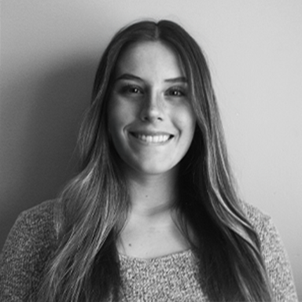

Hi I am Marina Provencio! I am a California based designer from Santa Clarita, California.
My journey into design began with my love of drawing from a young age and interest in creating collages.
I am currently a Senior at Mercy University in Dobbs Ferry, New York. I am also a pitcher on the DII softball team
here at Mercy.
I graduated from Saugus High School in Saugus, California. Besides creating artwork and collages, I enjoy 3D modeling
and motion graphics. I find interest in realism while creating drawings and life-like 3D models.
email: marinaprovencio.design@gmail.com